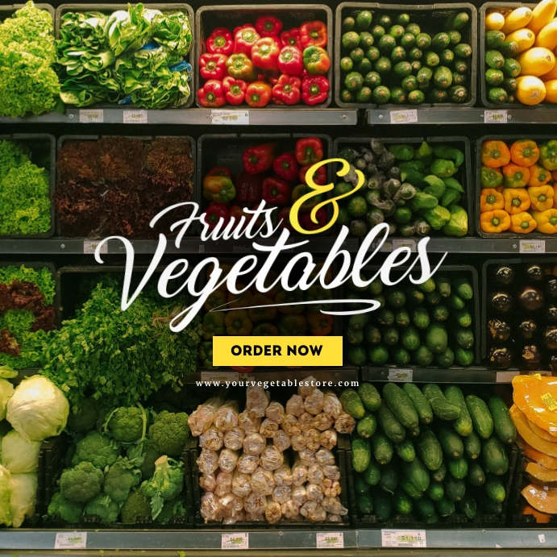
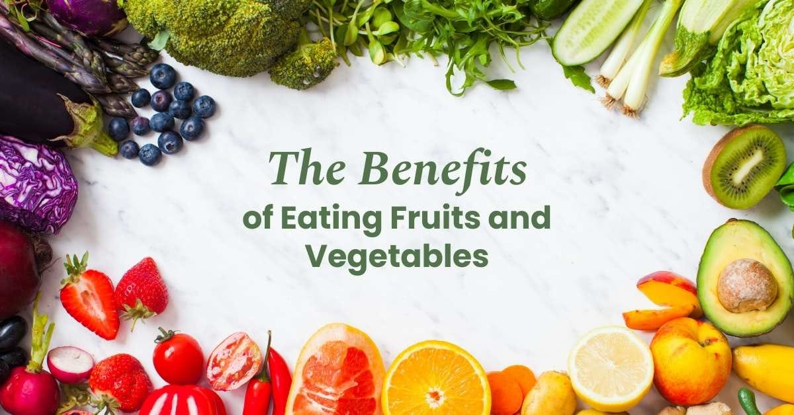

weclom to our The Great Greens Shop.


Welcome to [The Great Greens Shop], Your Fresh Destination!
At [Shop Name], we're passionate about providing the freshest, highest-quality fruits and vegetables to our community. Our story began with a simple goal: to make healthy eating easy and accessible.
Our Mission:
To source the best produce from local farmers and suppliers, and to create a welcoming space where customers can explore, learn, and enjoy the flavors of the season.
Our Values:
- Freshness: We guarantee the highest quality produce, carefully selected and handled with care.
- Community: We support local farmers and partner with suppliers who share our values.
- Sustainability: We strive to reduce our environmental impact through eco-friendly practices.
- Customer Delight: We aim to exceed your expectations with exceptional service and expertise.
Our Story:
[Insert brief story of how the shop came to be, including the founder's inspiration and journey.]
Meet Our Team:
[Insert photos and brief bios of the shop's team members, highlighting their favorite fruits or veggies and what they love about working at the shop.]
What Sets Us Apart:
- Seasonal selection: We update our inventory regularly to reflect the freshest produce available.
- Expert advice: Our team is happy to help with recipe suggestions, cooking tips, and nutrition guidance.
- Community involvement: We host workshops, tastings, and events to bring people together around good food.
Visit Us Today!
Swing by our shop, and taste the difference freshness makes! We can't wait to welcome you to our community of food lovers.
Feel free to customize this content to fit your shop's unique personality and style!
clicked